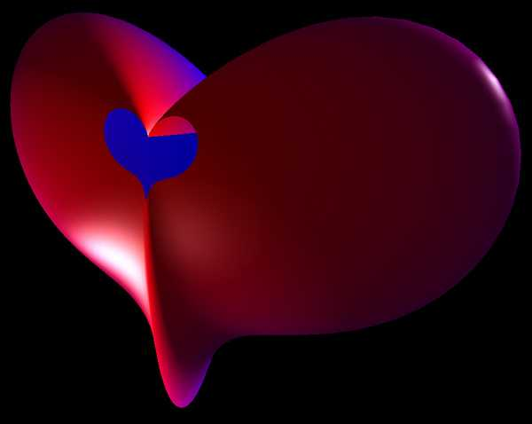
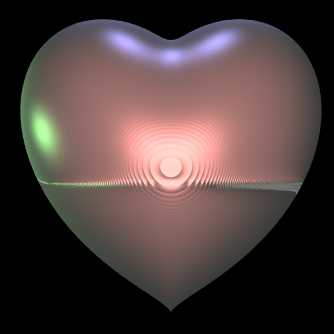
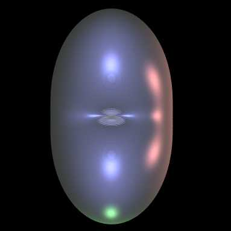
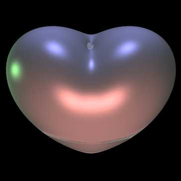
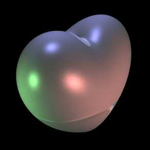

Heart surface 1
By
Paul Bourke
August 2002
r = 4 sqrt(1 - z
2
) sin
|theta|
(|theta|)
x = r sin(theta)
y = r cos(theta)
-0.98 <= z <= 0.98, -pi <= theta <= pi

Heart surface 2
Graphics by
Paul Bourke
March 2003
(2 x
2
+ y
2
+ z
2
- 1)
3
- x
2
z
3
/ 10 - y
2
z
3
= 0
C++ implementation contribution
by Mateusz Malczak



